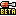

|
Este tema ha sido marcado como Resuelto (o fue tratado suficientemente).
los que hayan visto la temporada 0 narren aquí como eran los orígenes de uno de los mejores juegos de zombis de todos los tiempos, y cuenten que beneficios les otorgaron Esos tiempos  ... Si , donde casi todos eramos inexpertos y no teníamos casi ni idea . Era muy divertido , entrar a un pueblo al azar te llevaba siempre con varios buenos jugadores , todos muy activos y participativos . Aunque solía haber algún troll o inactivo . No como ahora , que si no tienes meta-alanza ya puedes rezar para entrar a un buen pueblo . era divertido y con el beta tester no se q2ue que daba 30 pa y el premio que ganamos al terminar la temporada 0 nos dieron este titulo y icono que tengo puesto ,pero creo que los pueblo leyenda no podian entrar
Xakonero
Esos tiempos :hordes_beta_1: ... Si , donde casi todos eramos inexpertos y no teníamos casi ni idea . Era muy divertido , entrar a un pueblo al azar te llevaba siempre con varios buenos jugadores , todos muy activos y participativos . Aunque solía haber algún troll o inactivo . No como ahora , que si no tienes meta-alanza ya puedes rezar para entrar a un buen pueblo . Existe eso Recordáis nuestro antiguo Foro? Tan limpito, tan chuli, tan activo... Ay... eran otros tiempos , para que no tengáis que ir a buscar a mi alma
zape90
Recordáis nuestro antiguo Foro? Tan limpito, tan chuli, tan activo... Ay... eran otros tiempos  yo sabia que eras beta,nadie de la primera o segunda podria ser tan genio en el juego Como quisiera haber entrado a la beta, empece a jugar una semana despues de que termino Yo por lastima entre a twinoid el día en el que se cerraron las entradas a la beta de Zombinoia, sino hubiera entrado... Yo quiero escribir :hordes_beta_1: y que salga el destornillador sagrado
Tydram
Yo por lastima entre a twinoid el día en el que se cerraron las entradas a la beta de Zombinoia, sino hubiera entrado... Yo quiero escribir y que salga el destornillador sagrado como ganarlo? pues espera a que salga un nuevo server (idioma) y espera para ser lawhs oei,en tu idioma beta tester
Tydram
Yo por lastima entre a twinoid el día en el que se cerraron las entradas a la beta de Zombinoia, sino hubiera entrado... Yo quiero escribir y que salga el destornillador sagrado No era tan fácil. Es decir, había que poner qué hacer en caso de una catástrofe zombie. Se valoraba la actividad el usuario (es decir, que miraban el tiempo online que estabas), que escribieras bien (sobre todo para buscar las erratas del juego) y que no hubieras jugado a Die2Nite ni Hordes, entre alguna cosa más. Me acuerdo que el 90% de la gente ponía cosas como "Yo me cogería un lanzacohetes y mi familia y me iría al supermercado a por comida y mataría muchos zombies y me iría al campo". Sí vamos, lo típico que haces cuando te atacan bichos así Yo puse algo similar a "Me pondría las botas a comer zombies Después de esos datos, se iban eligiendo hasta completar cupo. Me parece que los moderadores de Twinoid entraron directamente también. Y tampoco era tan bonito, porque había sobre todo que experimentar con cosas para ver qué fallos (bugs o erratas) había. No era una partida normal, sino que había que hacer el tonto Espianegro2131yo sabia que eras beta,nadie de la primera o segunda podria ser tan genio en el juego
zape90
No era tan fácil. Es decir, había que poner qué hacer en caso de una catástrofe zombie. Se valoraba la actividad el usuario (es decir, que miraban el tiempo online que estabas), que escribieras bien (sobre todo para buscar las erratas del juego) y que no hubieras jugado a Die2Nite ni Hordes, entre alguna cosa más. Me acuerdo que el 90% de la gente ponía cosas como "Yo me cogería un lanzacohetes y mi familia y me iría al supermercado a por comida y mataría muchos zombies y me iría al campo". Sí vamos, lo típico que haces cuando te atacan bichos así  . Con salsa barbacoa tienen que estar muy ricos . Con salsa barbacoa tienen que estar muy ricos  ". O algo así ". O algo así  Después de esos datos, se iban eligiendo hasta completar cupo. Me parece que los moderadores de Twinoid entraron directamente también. Y tampoco era tan bonito, porque había sobre todo que experimentar con cosas para ver qué fallos (bugs o erratas) había. No era una partida normal, sino que había que hacer el tonto
De lo mejor manes Pues yo voy a contar un secreto. No me seleccionaron para la Beta, pues me enteré tarde, pero aún así, quería jugar a toda costa, así que busqué y busqué por la red de redes y finalmente dí con un código y pude entrar, aunque fue solo durante dos pueblos, y uno de ellos, cortado por el final de esta. Moraleja, si quieres, puedes. Bueno, no todo, pero algunas cosas si. Tu inténtalo aunque sea, no seas vago. No mames!, como pudiste xD AHORA TROLLS Y MÁS TROLLS Los moderadores tuvimos el privilegio de ser los primeros Me acuerdo mi primer pueblo estaba llenos de jugadores que se han hecho grandes con el tiempo... yo fui, pero, me rabaron la cuenta y aqui estoy, con otra cuenta me pasan un link a hordes? XD
zhunterme pasan un link a hordes? XD
Usa Google, más fácil imposible ya lo encontre |
 Inicio
Inicio

 ...
...

 xd
xd ...
... .
. . Bueno, que también hay mucha gente que ha llegado "después" que sabe un montón de cosas
. Bueno, que también hay mucha gente que ha llegado "después" que sabe un montón de cosas